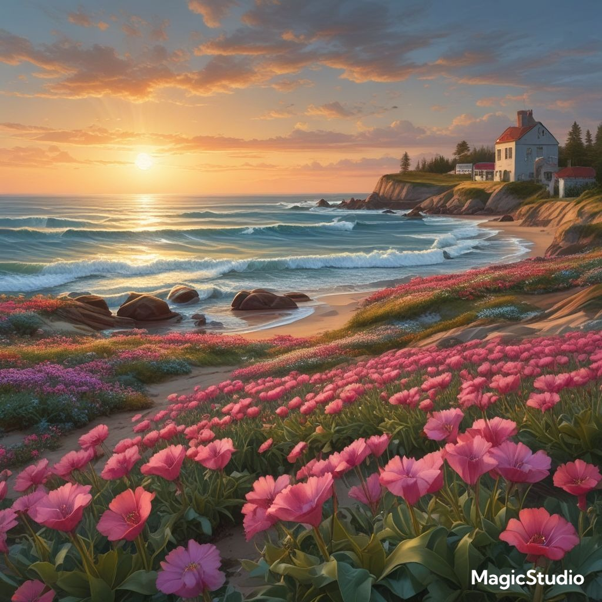
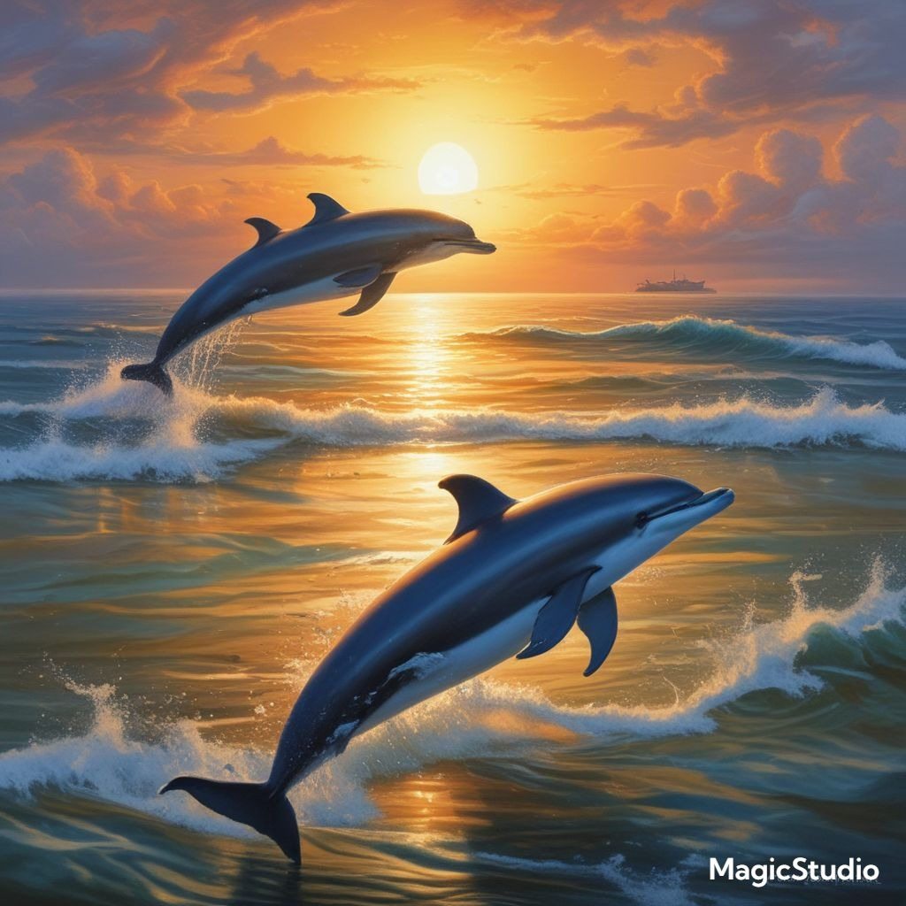
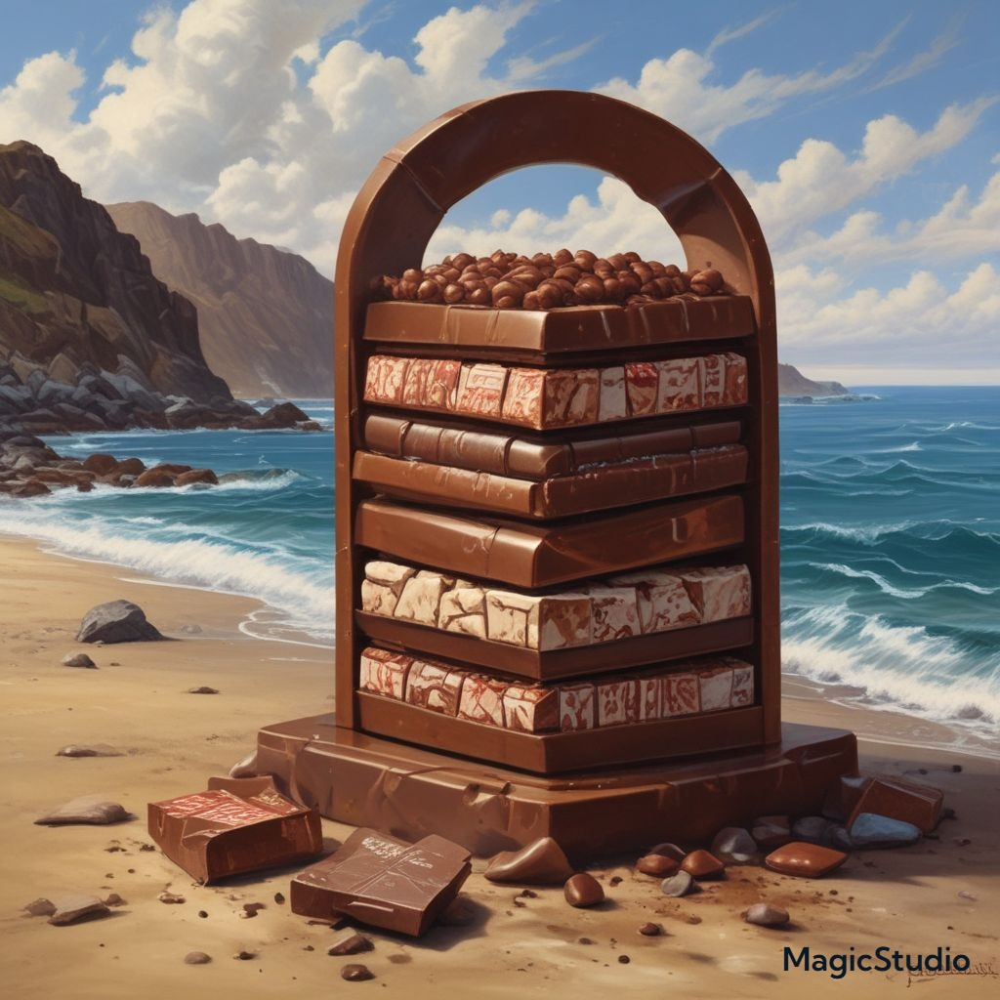

Floralis
Država Floralis je pravljična obala, kjer so modro morje, sončne plaže in bujna vegetacija vsakodnevni prizori. Ta država je znana po svoji edinstveni povezanosti z morjem, ki vpliva na vsak vidik njenega življenja – od kulture in tradicije do gospodarske dejavnosti in prehrane.

Država Floralis je dom čudovite obale, ki je obdana z neskončnimi modrimi oceani in morji. Nahaja se na majhnem arhipelagu, katerega otočki so razpršeni po širnem oceanu, kar ji daje prav poseben značaj in naravno lepoto. Naravni viri Floralisa so bogati s morskim življenjem, kar pomeni, da so ribištvo in pomorski promet ključna stebra njene ekonomije.Floralis je znan po svojih pristaniščih, kjer se srečujejo ladje iz različnih delov sveta, pa tudi po svoji kulturi, ki je globoko povezana z morjem. Mnogi prebivalci države živijo ob obali in se ukvarjajo z ribolovom, pomorstvom ali turizmom. Mestna arhitektura je prilagojena oceanografskim razmeram, s številnimi zgradbami, ki so zgrajene na plavajočih platformah ali na otokih, ki se dvigajo nad valovi.
- Morje in oceani so srce življenja v Floralisu – prebivalci častijo ocean kot vir življenja in modro barvo kot simbol miru, globine in povezanosti.
- Delfin je narodni simbol, pogosto viden v umetnosti, na zastavi in celo kot zaščitnik v mitologiji. Delfini naj bi bili prinašalci sreče in modrosti.
- Čokolada je tradicionalna sladica in pomemben izvozni izdelek. Gojijo posebno vrsto kakavovca na obalnih plantažah, ki daje čokolado z nežnim, a izrazitim okusom, pogosto pomešano z morsko soljo.
- Modra – simbolizira ocean, nebo, svobodo in harmonijo.

Floralis ima močno povezavo z naravo in morjem. Prazniki vključujejo festivale luči ob morju, kjer ljudje spuščajo modre lanternice na vodo v čast oceanu. Glasba temelji na valovitih ritmih, ki spominjajo na valove in petje delfinov.
V modrini globin naš dom je skrit,
kjer delfin v svobodi je naš mit.
S srcem iz soli, čokolado v dlani,
Floralis živi v oceanskih sanj.
Legenda pravi, da je prvi delfin z imenom Nari rešil brodolomca, ki je nato ustanovil Floralis. Ta človek je v zahvalo zgradil mesto ob morju in prisegel, da bo njegova kultura vedno častila morje, živali in naravo. Po mitih se Nari še vedno pojavi ob nevihtah in pomaga mornarjem.
✨ "Floralis – dežela modrine in sladkosti"
Tam, kjer nebo poljubi ocean,
kjer delfini skačejo med sončnimi žarki,
leži Floralis – skriti biser valov.
Dežela, kjer vsak dih zadiši po soli in čokoladi,
kjer modrina ni le barva, temveč občutek doma.
Na obali stojijo hiše iz belega kamna,
okrašene z morskimi školjkami in palmami,
otroci se smejejo, medtem ko si delijo čokoladne sadeže,
njihovi starši pa v ritmu vetra pletejo pesmi oceana.
Vsak dan se začne z glasom morja
in konča z žarom modrih lanternic,
ki jih spuščajo v vodo –
za srečo, za ljubezen, za spomin.
Floralis ni le kraj.
Je občutek.
Je svoboda v plavanju z delfini,
je toplina sonca na koži,
je sladkost, ki ostane na jeziku –
dolgo potem, ko valovi ponesejo tvoje misli proč.
